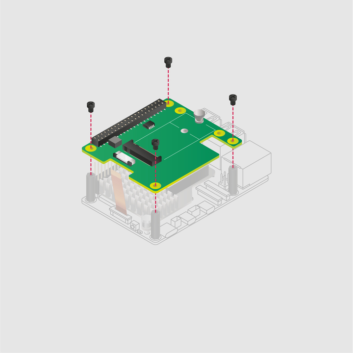
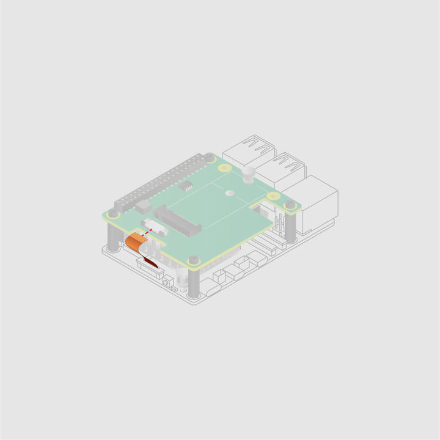

Set the M.2 HAT+ on top of the spacers and use the remaining screws to secure it in place.

Insert the ribbon cable into the slot on the M.2 HAT+.
Lift the ribbon cable holder from both sides, then insert the cable with the copper contact points facing up. With the ribbon cable fully and evenly inserted into the port, push the cable holder down from both sides to secure the ribbon cable firmly in place.
